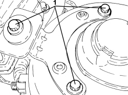
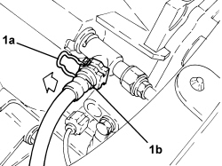
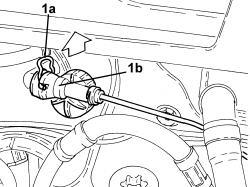
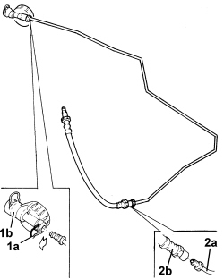

1820B52 <x>HOSE FROM MASTER CYLINDER (PUMP TO CLUTCH HYDRAULIC ACTUATOR - R&R</x>
- Path
- Procedures > 18 CLUTCH UNIT > 1820 CLUTCH RELEASE CONTROLS > 1820B HYDRAULIC CLUTCH SYSTEM > 1820B52 <x>HOSE FROM MASTER CYLINDER (PUMP TO CLUTCH HYDRAULIC ACTUATOR - R&R</x>
- Kind
- repair procedure (removal / refitting; the operation number is the code)
- Applies to
- engines: 1.9 JTD 16v; all production periods
- Interactive page
- https://sloeber94.github.io/elrnDB-fCrm/en/#/194004009
Applies to: engines: 1.9 JTD 16v; all production periods
 Removing
Removing
 Refitting
Refitting- Position the vehicle on a lift.
Op. 7055B54 UNDER ENGINE PROTECTION/GUARD - R.R.
Op. 1016A10 SOUND-PROOFING COVER - R.R
Op. 5530B52 BATTERY SUPPORT/DRIP TRAY - R.R
- Replace the brake-clutch fluid reservoir plug using the tool.
Tool | Description | Function | Validity |
|---|---|---|---|
2000001400 | Plug | Brake/clutch fluid reservoir cap |
1. Remove the engine coolant supply reservoir from the mounting bracket without disconnecting the pipes.

Applies to: engines: 1.9 JTD 16v; all production periods
Op. 1044B10 FUEL FILTER ASSEMBLY - R + R OR REPLACE
Op. 5520C20 HEATER PLUGS CONTROL UNIT - R.R
1. Undo the bolts fixing the ABS control unit mounting to the bodyshell.

Applies to: engines: 1.9 JTD 16v; all production periods
1. Lift up the retaining clip (1a) and disconnect the flexible pipe from the master cylinder to the hydraulic clutch actuator (1b), three-way connector side.

Applies to: engines: 1.9 JTD 16v; all production periods
1. Lift the retaining clip (1a) and disconnect the clutch hydraulic circuit vibration damper (1b), master cylinder side.

Applies to: engines: 1.9 JTD 16v; all production periods
- Release the pipe from the master cylinder to the clutch hydraulic actuator from the fastening clips and remove it together with the vibration damper.
1. At the bench, lift up the clip (1a) and separate the vibration damper (1b) from the rigid pipe.
2. Undo the connector and disconnect the rigid pipe from the vibration damper to the operating cylinder (2a) from the flexible pipe (2b).

Applies to: engines: 1.9 JTD 16v; all production periods
Refitting
Removing- Connect the rigid pipe from the vibration damper to the operating cylinder to the flexible pipe and tighten the connector to the recommended torque.
Component | Fastening | dia | Value (daNm) | Validity |
|---|---|---|---|---|
Flexible supply pipe to operating cylinder | Connector | - | (rigid pipe side) |
- Connect the vibration damper to the rigid pipe and secure it using the clip.
- Place the pipe from the master cylinder to the hydraulic clutch actuator in its housing together with the vibration damper and secure it using the clips.
- Connect the flexible pipe from the master cylinder to the hydraulic clutch actuator, three-way connector side and secure it using the retaining clip.
- Tighten the bolts fixing the ABS control unit mounting to the bodyshell.
Op. 5520C20 HEATER PLUGS CONTROL UNIT - R.R
Op. 1044B10 FUEL FILTER ASSEMBLY - R + R OR REPLACE
- Place the engine coolant supply reservoir in its housing on the mounting bracket.
- Replace the tool with the brake-clutch fluid reservoir plug.
Tool | Description | Function | Validity |
|---|---|---|---|
2000001400 | Plug | Brake/clutch fluid reservoir cap |
Op. 5530B52 BATTERY SUPPORT/DRIP TRAY - R.R
Op. 0010T64 BRAKE AND/OR CLUTCH FLUID CHECK LEVEL AND TOP UP AS NECESSARY
Op. 0010T67 HYDRAULIC CLUTCH SYSTEM - BLEED AIR
Op. 7055B54 UNDER ENGINE PROTECTION/GUARD - R.R.
Op. 1016A10 SOUND-PROOFING COVER - R.R
- Remove the vehicle from the lift.
Topics linked from this page (8)
- 0010T64 BRAKE AND/OR CLUTCH FLUID CHECK LEVEL AND TOP UP AS NECESSARY
- 0010T67 HYDRAULIC CLUTCH SYSTEM - BLEED AIR
- 1016A10 SOUND-PROOFING COVER - R.R
- 1044B10 FUEL FILTER ASSEMBLY - R + R OR REPLACE
- 5520C20 HEATER PLUGS CONTROL UNIT - R.R
- 5530B10 BATTERY - R+R
- 5530B52 BATTERY SUPPORT/DRIP TRAY - R.R
- 7055B54 UNDER ENGINE PROTECTION/GUARD - R.R.